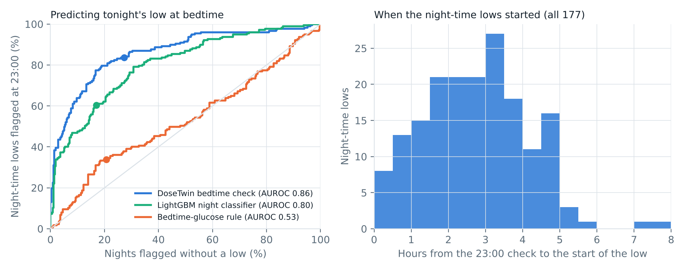

AUROC 0.86 vs 0.80 for LightGBM (+0.06, 95% CI 0.01–0.11) and 0.53 for the bedtime-glucose rule.
Flags 84% of night lows, a median 2.5 h before they start, before the person falls asleep.
A twin-sized snack cut night-time below 70 by 27% (1.63% → 1.19%, p = 0.03), for 2.5 snacks a week.
529 held-out nights, 177 with a low (< 70 mg/dL ≥ 15 min, 23:00–07:00). Thresholds frozen on the development cohort. It also flags 27% of nights that stay safe.